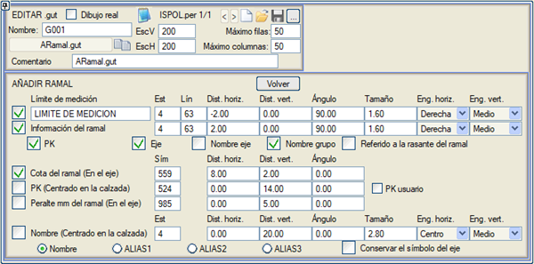

| |
|
ENKESİT PAFTALARI İÇİN ŞABLONLAR: BRANŞ EKLEME VERİLERİ
|
Bu pencereden, KESİT menüsündeki [Branş Ekle] seçeneği ile eklenen Branşların (diğer kesitlerin) bilgileri enkesitlere etiketlenebilir. 
Eğer Metraj Limiti kutucuğu etkinleştirilirse, METRAJ LİMİTİ metni veya yazdığımız metin görünür ve bu metin başka bir güzergahla çakışma bölgesinde yer alır. Ayrıca, sınır çizgisi ile yapılan kırpma, Çizgi'de belirtilen tipte dikey bir çizgi ile temsil edilir (negatif tipler gösterilmemesine neden olur). Branş bilgisi Branşun kırmızı kotuna göre olabilir. Enkesitte, Branşun güzergah numarasını tanımlayan sembol bulunmalıdır; bu sembol, enkesitler çizilirken Branş bilgisi metniyle değiştirilir. Eğer Branş bilgisi KM'yi içeriyorsa, enkesitte gelen Branş KM sembolü çizilmez, ancak KM'yi içermiyorsa sembol çizilir. Eğer Branşın kotunu etiketlemek için bir sembol işaretlenirse, bu sembol enkesitte gelenin yerini alır. Bu metin ayrıca bir stille ilişkilendirilecek ve kullanıcı tarafından belirtilen yatay mesafe (kırpma çizgisine göre) ve dikey mesafe (üst kenar boşluğuna göre) ile temsil edilecektir. Ayrıca bir açı, boyut ve göreli bağlantı noktası (yatay ve dikey) ile de temsil edilecektir. Branş bilgisi olarak, metin şeklinde (ve yine kullanıcının belirleyeceği tercihlerle) KM, güzergah numarası, güzergah adı ve ait olduğu grup gösterilebilir. Ayrıca, Branşın kotu bir etiketle de etiketlenebilir. Bu etiket, bir yatay öteleme ve dikey öteleme ile bir dönüş açısı ile ilişkilendirilecektir. KM eşitliklerinden türetilen kullanıcı KM'lerini etiketlemek de mümkündür. Demiryolu Branşları için dever mm cinsinden, varsayılan olarak sembol 985 aracılığıyla etiketlenebilir, konumu değiştirilebilir ve açı ayarlanabilir. Ad (Taşıt Yolunda Ortalanmış): Ana yolun adını Branşın taşıt yolunda etiketlemeyi sağlar (Ad, TAKMAAD1, TAKMAAD2, TAKMAAD3). Güzergah sembolünü koru: Güzergah adını taşıt yolunda ortalayarak eklerken, Branş güzergah numarasını içeren orijinal sembol korunabilir. Bu seçenek için Branş Bilgisi'ni devre dışı bırakmamız gerekir. Kullanıcıya, SEÇENEKLER alt menüsünde BRANŞ EKLEME VERİLERİ işaretliyse, diğer güzergahlarla çakışmaları gösterirken burada belirlenen tercihlerin kullanıldığı hatırlatılır. Bir güzergahın enkesit paftaları çizilirken, bu menü aracılığıyla eklenen diğer güzergahlar göründüğünde ve yeni yüzeyler oluşturulduğunda (Branş Ekle menüsünde seçenek etkinleştirilmişse), çizimin tüm elemanları ana güzergahın modelinde görünür, ancak eklenen diğer güzergahların yüzeylerini tanımlayan çizgiler kendi güzergahlarının modelinde görünür. Program kütüphanesinde yer alan ARamal.gut bilgi bandı, bu menüyü kullanır. |